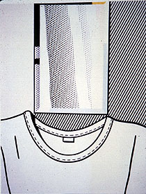

Self Portrait by Roy Lichtenstein
Roger Koenker
Office: Department of Economics University of Illinois Champaign, IL, 61820
Phone: (217) 333-4558
Fax: (217) 244-6678
E-mail: rkoenker@uiuc.edu
CV: PostScript | PDF